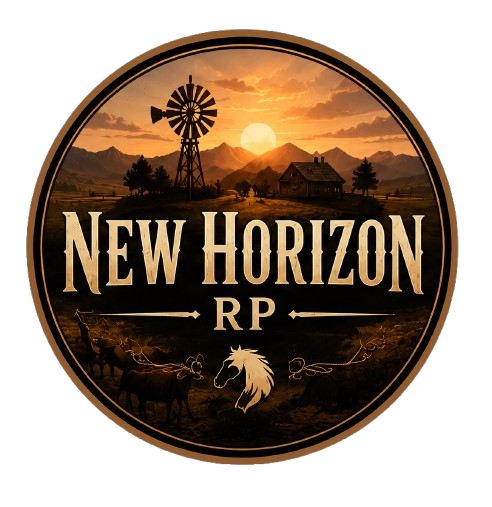

MISSOURI & THE FRONTIER · 1897

Sedm osudů. Jeden horizont.
Každý má svou minulost. Který příběh otevřeš?
POSUŇ MEZI POSTAVAMI
MISSOURI & THE FRONTIER · 1897

Sedm osudů. Jeden horizont.
Každý má svou minulost. Který příběh otevřeš?